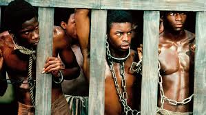

TREATMENT AND ROLE OF WOMEN IN HOME GOING
PHYSICAL AND SEXUAL VIOLENCE
- Women are physically assaulted for no reason; Big Man beats up Esi in order to maintain his image and not to be mistaken for a weakling.
- Esi is raped by the soldiers and deprived off her dignity.
- Esi continues to endure physical torment once in the hand of her owner, who whips her every time her child speaks a word in her native language.
- Effia endures physical abuse from Baaba on a daily basis.
- Baaba also marries Effia off to a Whiteman who is a slave trader against her will.
- Effia and the other soldiers wives are not regarded as wives they’re nicknamed wenches.
- Maame was raped by her master who was also a Big Man.
SLAVERY

The slaves are kept in dungeons underneath the cape castle, awaiting transit. Among them are ex-house servants, prisoners of tribal and regional wars and unlucky captives sold to the Europeans for money and goods, such as 15-year-old Esi , Esi was seized during a raid on her own village and brought to the castle by “bomboys”, local boys who worked for the British transporting cargo. After Esi is enslaved, she and the other women are inhumanely chained, stacked together and on top of each other, and locked up in the dungeons.
INEQUALITIES AND GENDER STEREOTYPES
The oppression of women is based on sexist assumptions of their weakness. Thus controlled by men and often sexually violated. Women are starved, abused, and have their babies taken away. Women are largely responsible for watching over the children and cooking and not politics. Women are told to stay out of affairs of men for example when Effia asked Fifi what they were doing for chief Abeeku, Fifi told her to stay off the affairs of men.
ROLE OF WOMEN IN HOME GOING
MARRIAGE AND CHILD BEARING
Women main roles throughout the first four chapters is to get married as soon as they receive their first blood.
As soon as they are married they are expected to bore children or else they’re regarded to be cursed.